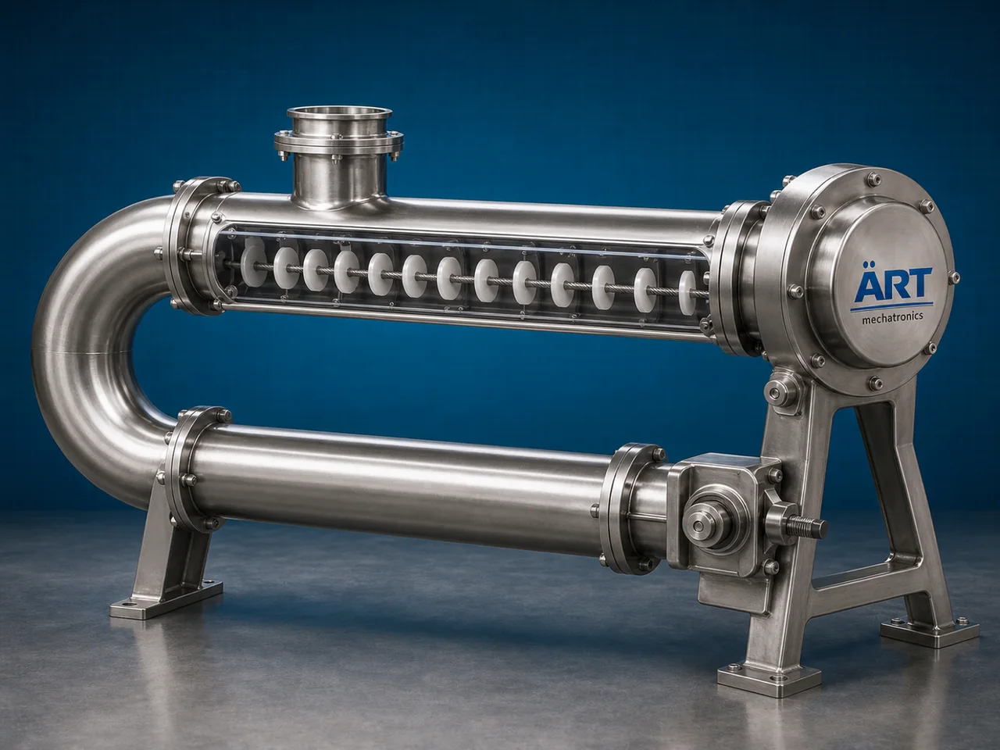

Disc Conveyor Machine (Industrial Tubular Disc & Enclosed Material Conveying System)
A Disc Conveyor Machine, also known as a Tubular Disc Conveyor or Disc Chain Conveyor System, is an advanced industrial material handling equipment designed for enclosed, dust-free, gentle, and energy-efficient conveying of powders, granules, pellets, grains, flakes, and bulk materials through a tubular conveyor system using discs mounted on a moving chain or cable.

About the Disc Conveyor
Disc conveyor systems are widely used for:
- Dust-free material conveying
- Gentle product handling
- Hygienic material transfer
- Multi-point feeding and discharge
- Long-distance conveying
- Automated bulk material handling
The machine improves:
- Material handling efficiency
- Product safety
- Factory hygiene
- Production automation
- Energy efficiency
- Space optimization
The conveyor operates using:
- Circular discs attached to chain or cable
- Tubular enclosed conveying lines
- Motor-driven chain systems
- Multi-directional conveyor routing
to transport materials smoothly without damaging product quality.
Disc conveyor machines are widely used in industries such as:
Food processing industries
Pharmaceutical industries
Chemical industries
Dairy industries
Plastic industries
Coffee and beverage industries
Grain processing plants
Nutraceutical industries
where gentle, enclosed, contamination-free material conveying is essential.
The machine is highly suitable for:
- Powder conveying
- Granule handling
- Food ingredient transfer
- Pharmaceutical powder conveying
- Coffee bean transportation
- Hygienic bulk material handling
ART Mechatronics offers high-performance disc conveyor machines, engineered for continuous industrial operation, enclosed hygienic conveying, gentle product handling, and reliable long-term performance.
Working Principle of Disc Conveyor Machine
Powders, granules, grains, pellets, or food ingredients are fed into conveyor inlet section
Motor drives chain or cable carrying specially designed discs inside enclosed tubes
Discs push material smoothly through conveyor pipeline
Machine conveys:
- Powders
- Granules
- Pellets
- Coffee beans
- Food ingredients
- Pharmaceutical powders without dust leakage or contamination.
Slow and controlled conveying minimizes: Product breakage Material degradation Segregation issues
Conveyor can operate: Horizontally Vertically Inclined Around curves allowing flexible industrial layouts.
Product discharged automatically at desired process points or multiple outlets
Types of Disc Conveyor Machines
- 1. Tubular Chain Disc Conveyor
Uses: ✔ Chain-driven disc conveying system for heavy-duty industrial applications.
- 2. Cable Disc Conveyor
Uses: ✔ Flexible cable-driven disc system for gentle material handling.
- 3. Food Grade Disc Conveyor
Designed for: ✔ Hygienic food and pharmaceutical applications
- 4. Multi Point Disc Conveyor
Suitable for: ✔ Multiple inlet and outlet conveying systems
- 5. Vertical Disc Conveyor
Used for: ✔ Vertical material lifting applications
- 6. Heavy Duty Industrial Disc Conveyor
Suitable for: ✔ Continuous industrial bulk material handling operations
Industries Using Disc Conveyor Machine
🍃 Food Processing Industry Hygienic food ingredient conveying systems 💊 Pharmaceutical Industry Powder and capsule ingredient transfer systems ⚗️ Chemical Industry Powder and granule conveying applications ☕ Coffee Industry Coffee bean transportation systems 🥛 Dairy Industry Milk powder and food ingredient handling systems 🌾 Grain Processing Industry Grain and seed conveying systems 🧴 Nutraceutical Industry Supplement powder handling systems 🏭 Plastic Industry Plastic pellet conveying systems
Features & Advantages
- Fully enclosed dust-free conveying system
- Gentle product handling with minimal breakage
- Hygienic and contamination-free material transfer
- Flexible routing and compact installation
- Continuous industrial operation
- Heavy-duty industrial construction
- Multiple inlet and outlet options available
- Energy-efficient conveying solution
- Low maintenance and easy cleaning design
Technical Highlights
Conveyor Type: Chain disc conveyor Cable disc conveyor Tubular conveyor system Construction: Stainless Steel / Mild Steel Conveyor Routing: Horizontal Vertical Inclined Curved Drive System: Geared motor drive Chain drive system Conveyor Structure: Enclosed tubular design Automation: Semi-automatic Fully automatic PLC-based systems
Turnkey Disc Conveying Solutions
ART Mechatronics offers: Complete disc conveyor systems Hygienic bulk material handling solutions Food and pharma automation integration Multi-point conveying systems Installation & commissioning After-sales service & AMC
Why Choose Art Mechatronics
Expertise in hygienic industrial material handling systems Customized conveyor solutions for multiple industries High-performance and durable industrial construction Energy-efficient and reliable conveying systems Proven industrial performance across sectors
Applications
Food Processing Plants Pharmaceutical Manufacturing Units Chemical Industries Coffee Processing Facilities Dairy Plants Grain Processing Industries
Related Conveying & Handling machines
Get pricing & specs for the Disc Conveyor
Share the product, target capacity, current process and plant location. These details help our engineers discuss the right machine or line configuration.
One partner, from design to start-up
ART Mechatronics designs, manufactures, installs and commissions your Disc Conveyor solution with regional presence in India, UAE and Thailand.